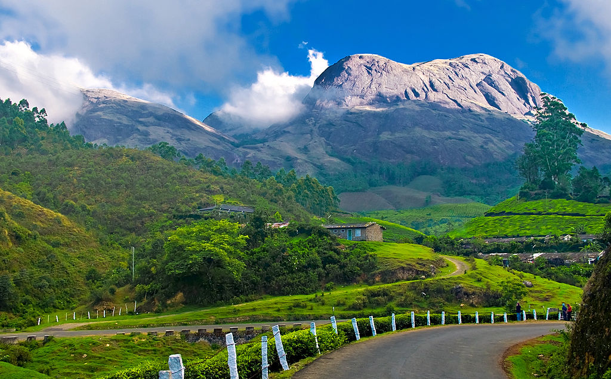

kerala a state on the Malabar Coast of India.[13] It was formed on 1 November 1956, following the passage of the States Reorganisation Act, by combining Malayalam-speaking regions of the erstwhile regions of Cochin, Malabar, South Canara, and Travancore.[14][15] Spread over 38,863 km2 (15,005 sq mi)
According to the Sangam classic Purananuru, the Chera king Senkuttuvan conquered the lands between Kanyakumari and the Himalayas.[40] Lacking worthy enemies, he besieged the sea by throwing his spear into it.[40][41] According to the 17th-century Hindu mythology work Keralolpathi, the lands of Kerala were recovered from the sea by the axe-wielding warrior sage Parasurama, the sixth avatar of Vishnu (hence, Kerala is also called Parasurama Kshetram 'The Land of Parasurama' in Hindu mythology).[42] Parasurama threw his axe across the sea, and the water receded as far as it reached.
